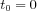
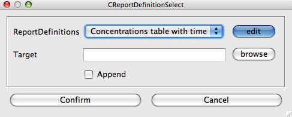
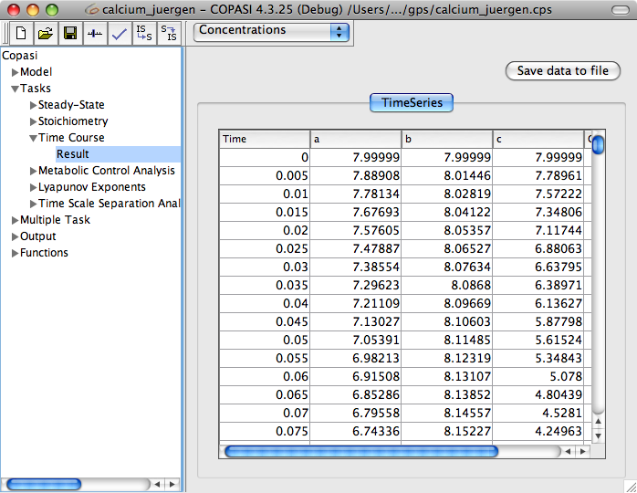

In order to do a time course simulation, you have to navigate to the corresponding task branch in the object tree which is located at Tasks->Time Course.
In the
Time Course widget you can change several parameters for the time course, e.g. the duration of the simulation and the number of intervals that are being calculated in the time range. Alternatively to setting the number of intervals, you can also set the size of the interval. If you set either one, the other will be updated accordingly. Because if you change the duration, the number of intervals will stay the same, which means that the interval size will be adjusted. The check box labeled Save Result in Memory tells COPASI to keep the result of the time series calculation in memory in order to display it in a result dialog. Since this can be a large amount of data depending on the size of your model and/or on the number of intervals you want COPASI to calculate, you should disable this if you think the result might not fit into memory. The consequence of disabling this check box is that you need to
define a report in order to store the results of the time course simulation.
Another thing that you can adjust in this dialog is the time at which COPASI starts to record the output. Normally COPASI will store all output and display it in the plot and reports, if there are any, or in the results dialog, if that feature was not disabled. With the delayed check box and input field of Start Output Time, you can specify that COPASI shall drop all results prior to a certain time point. For example, you could decide that you want to run a time course simulation for 100 seconds but only interested in the last 50 seconds of the simulation. In this case you would activate the delayed check box and specify a delay of, lets say, 50. This delay will be used for all kinds of output.
The time course simulation does not necessarily start with  . The start time of the time course simulation depends on the initial model time which can be specified in the
general model settings dialog.
COPASI supports six different methods for calculating time course simulations. COPASI can use the
LSODA solver, or its variant called
LSODAR, to calculate the time course deterministically. COPASI is able to calculate the time course stochastically by means of one of two stochastic solvers: the
Gibson and Bruck method or the
Tau-Leap one. Depending on the solver you have chosen, you can set several parameters in the Parameter value table that influence the way the method works. A detailed explanation of those parameters will follow in the methods part of this document.
In addition to purely deterministic or purely stochastic time course simulations, COPASI can also use a so called hybrid method to calculate a trajectory. This hybrid method splits the model in two segments according to the number of particles participating in a reaction. Reactions with many particles are simulated deterministically and those reactions with only a few particles are simulated stochastically. The boundaries of what is considered as to many or few particles can be set by the user. Depending on the nature of the model, the hybrid simulation can lead to significant simulation speedup compared to purely stochastic simulation while still being more accurate than purely deterministic simulation for small particle numbers. However, the method should still be considered experimental. For a more detailed description of the method and the attributes that you can set see the methods section.
The hybrid solver comes in two flavors. One uses LSODA for deterministic simulation and is called
Hybrid (LSODA), the other uses Runge-Kutta fourth order and is called
Hybrid (Runge-Kutta).
If you haven't created a report definition yet, you can use the output assistant to easily create one by clicking on the corresponding button at the bottom of the time course dialog. Once you have
created a report definition, you have to associate this report definition with a file for COPASI to be able to write the results to that file. To do that, you click on the Report button.
|  |
| Dialog to associate a Report with a File |
The dialog that pops up will let you choose the report you want to use (in case you created more than one) and lets you browse for a file to store the report to. Additionally, you can choose if you want to append the report to an already existing file. The default is to create a new file, or to overwrite an existing file. If you want to append to the selected file, you have to check the Append check box.
Once you made all the desired changes to the parameters, you can start the time course simulation by clicking on the Run button. COPASI will show a progress bar while running the simulation, which might take some time depending on several factors, like the hardware you are using, the simulation method you chose, and/or the size of your model. Once COPASI finishes the calculation, the results will be displayed in the report file you defined and/or in a separate result dialog, if you told COPASI to keep the results in memory.
The Result dialog is located directly below the Time Course branch in the object tree. In this widget you can choose whether you want the results to be displayed as concentrations or as particle numbers, and you have the possibility to store the results to a file. The advantage that a report has rather than writing a file in the Result widget is that you can choose exactly which species concentrations you want to store whereas the Result dialog always stores all species concentrations. You also can't change the order in which the species concentrations are written, if you store the result from this dialog.
|  |
| Trajectory Task Results |